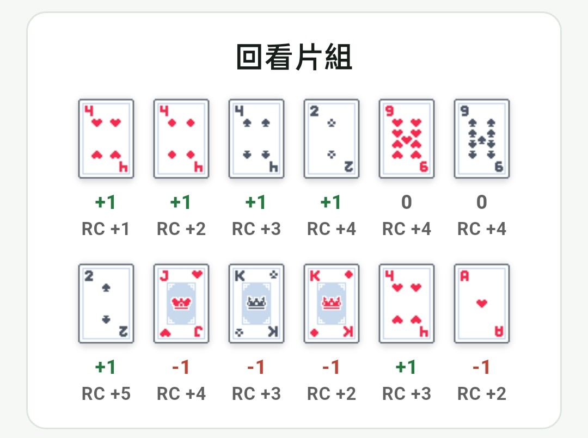

Hi-Lo 算牌
算牌不是記住每一張牌，而是估計剩餘牌堆中高牌的密度。最主要的用途有兩個：調整下注大小，以及套用 deviation。
Hi-Lo 牌值
| 牌 | 計數 |
|---|---|
| 2-6 | +1 |
| 7-9 | 0 |
| 10、J、Q、K、A | -1 |
App 訓練範例：RC 怎麼累加
Running Count 從 0 開始，每看到一張牌就依 Hi-Lo 牌值更新。下面這組牌中，2-6 算 +1，7-9 算 0，10、J、Q、K、A 算 -1；一路累加後，最後 RC 變成 +2。

RC / TC
Running Count（RC）會隨著每張已曝光的牌更新。True Count（TC）= RC / 剩餘牌副數。TC 的作用是把不同牌鞋深度下的優勢強度標準化。
TC 計算例子
實際估算時，可以先看牌鞋剩幾張牌，再換算成剩餘副數。因為 1 副牌是 52 張，所以 TC 大約等於 RC 除以「剩餘張數 / 52」。
| 情境 | RC | 剩幾張牌 | 換算副數 | TC | 解讀 |
|---|---|---|---|---|---|
| 牌鞋前段 | +5 | 286 張 | 5.5 副 | +0.9 | 優勢剛開始出現，訊號還不強。 |
| 牌鞋中段 | +7 | 168 張 | 3.2 副 | +2.2 | 高牌密度已經更明顯，可以開始注意下注級距。 |
| 牌鞋後段 | +8 | 94 張 | 1.8 副 | +4.4 | 剩餘牌少且 RC 偏高，下注訊號更強，但波動也會變大。 |
算牌訊號怎麼用？
- TC 越高，代表剩餘牌堆高牌密度越高。
- 高 TC 常用於提高下注。
- 部分牌局在 TC 達到門檻時，會從基本策略改成 deviation。
算牌通常不違法，但賭場仍可能拒絕服務。這個網站與 App 主要用於學習機率與策略，不是鼓勵賭博。